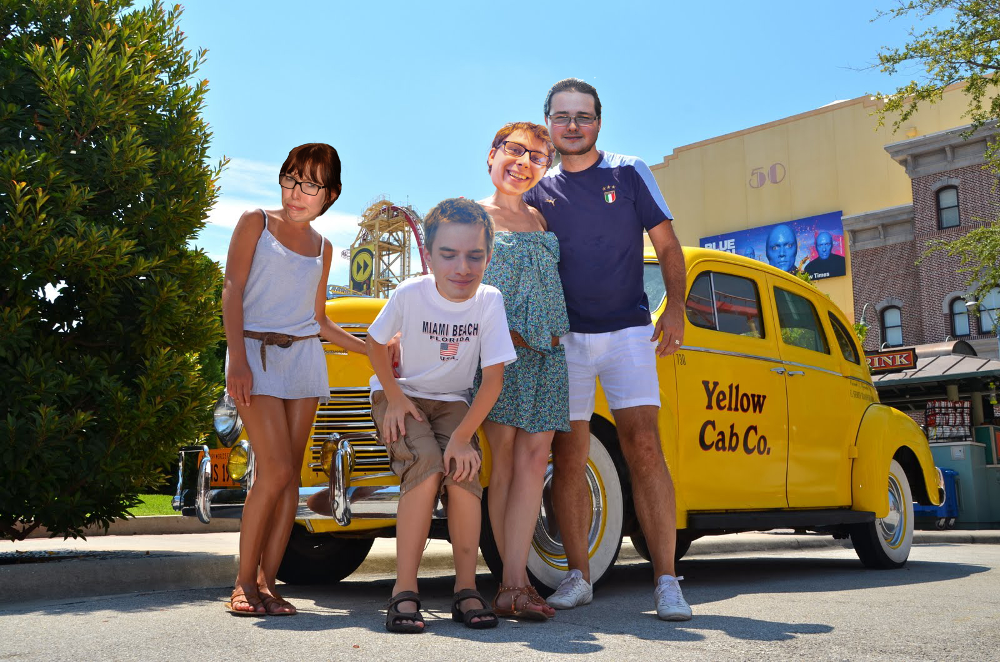
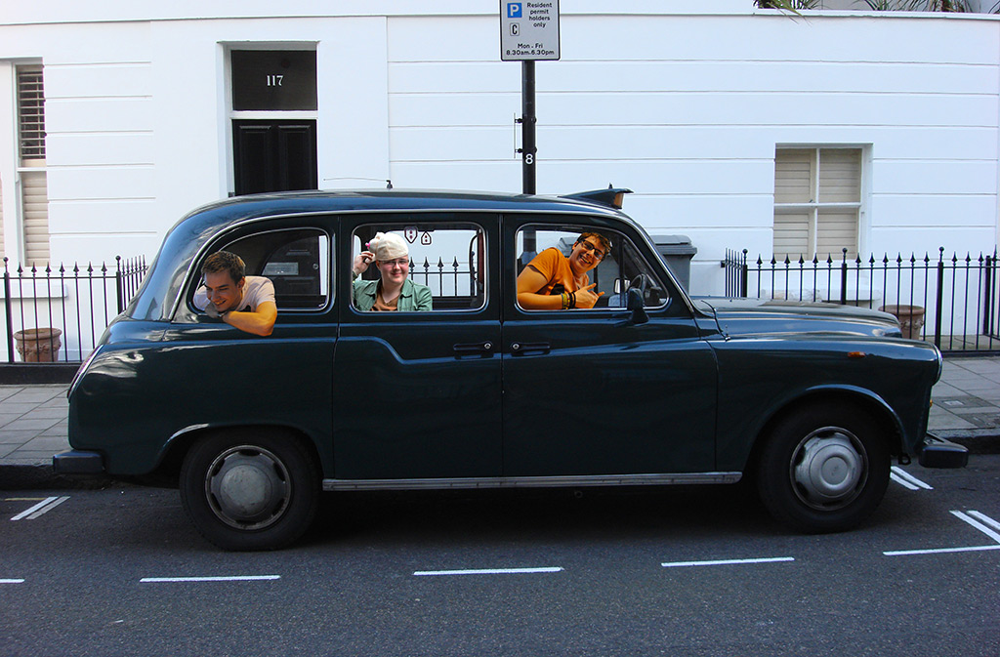
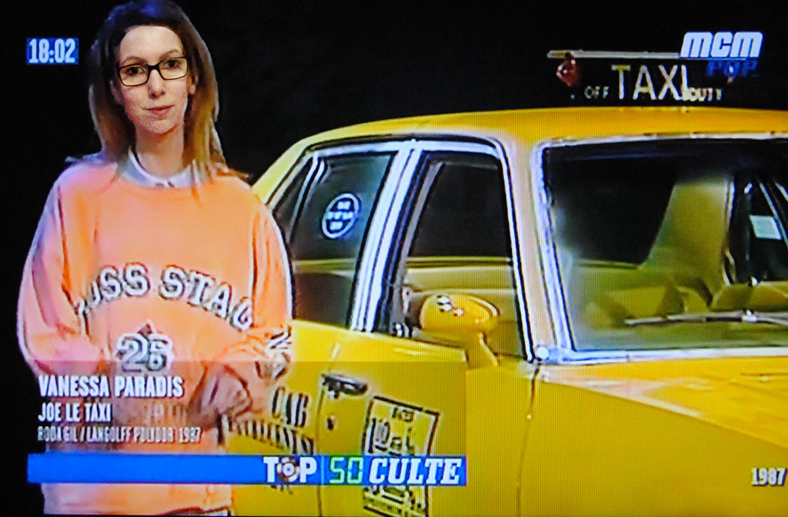

i need a cab !
making of
La Famille
Les garçons
la fille

brainstorming
Pour commencer, nous faison une recherche de pistes à explorer. Nous recherchons également ce qui est possible pour les données.

arrangement
Une fois le sujet choisi et les données récoltées, nous déterminons la structure du site internet.

the light
Un petit rayon de soleil pour commencer la journée. Et non on ne parle pas de toi, Kevin !!!

concentrate
Antoine toujours très concentré.

the joker
Une vanne pourrie à lâcher ? Arnaud est là.

the sick person
Et puis parfois on tombe malade, et c'est vraiment pas chouette :(